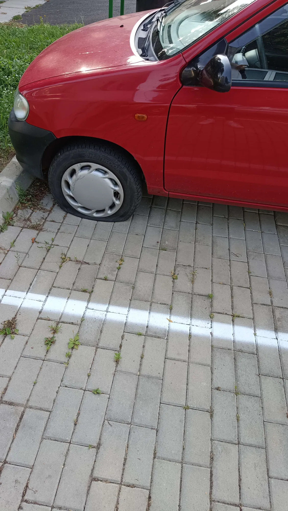

01 — Ki ő?
Ismerd meg a legjobb nővért
2001
szeptember
20
csütörtök
25év
holnaptól!
Kisnyuszi
- 9 131 nap
- 300 hónap
- 219 144 óra
- 1 kis piros Suzuki Alto
02 — Az örök segítő
Ha fogalmazást kellett írnom, ő segített. Ha rajzolni kellett, ő segített. Mindig ő segített nekem.
Fogalmazások
Rajzok
Mindig
03 — Konyhai kisokos
Anyu & Mercédesz a konyhában
KONYHAI NAPLÓ · #0001
Közös főzés
- 1 × Mercédesz✓
- 1 × anyu✓
- 1 × konyha✓
- ∞ × türelem✗
ADAG0
Mercédesz sosem tud az anyjával együtt főzni. Sosem.
$ fozes --egyutt anyu mercedesz
› konyha betöltése… kész
› hozzávalók ellenőrzése… kész
› közös főzés indítása…
✖ HIBA: közös főzés nem sikerült
✖ (soha nem sikerül)
$
04 — A kis piros
Suzuki Alto
Mercédesz a kis piros Suzuki Alto tulajdonosa. Kicsi, piros, és bárhová eljut vele – pont ilyennek kell lennie egy igazi városi hősnek.
Egy kicsit most lapos, de attól még a mi kis pirosunk. 🛞

05 — Pillanatképek
Pillanatképek
01
Wellness-nap
Amikor a kisnyuszi feltöltődik. Neki ez is jár, sőt, még több.
02
Életlen, de vidám
Nem a legélesebb kép a világon, de a hangulat tökéletes.
03
Díszben
Csillogó ruha, gyönyörű mosoly – így néz ki, ha Mercédesz kiöltözik.